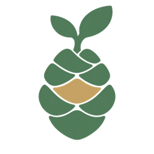

Vai al contenuto

PREVEDI
App
Il mio percorso
P
Conserva la copia originale
Usa il percorso ritrovato
Ripristina una copia
Inizia un nuovo percorso
Chiudi
Apri quel giorno
Annulla rimozione
Attiva JavaScript per usare il diario e le attività di PREVEDIApp.